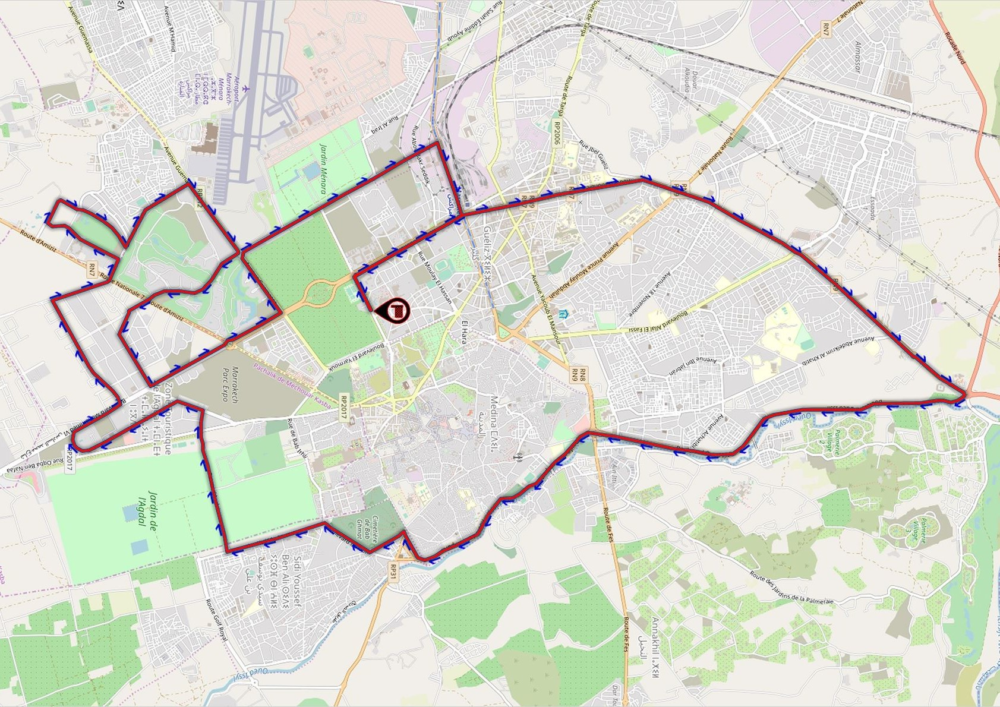

Sous le Haut Patronage de sa Majesté le Roi Mohammed VI, le Marathon International de Marrakech annonce sa 32ème édition le Dimanche 15 Mai 2022. Plus de 9 000 coureurs des quatre coins du globe, seront au rendez-vous pour participer à l’un des plus prestigieux marathons du monde. L’endénique ville de Marrakech offre un cadre exceptionnel, un climat souvent clément en plein mois de janvier et un beau circuit considéré parmi les plus rapides des marathons internationaux, le long des allées de palmiers, d’orangers et d’oliviers, mais aussi des remparts de la ville. Dans la continuité, mais aussi dans le changement, le Marathon International de Marrakech, n’ambitionne pas seulement la reconquête de la place qu’il a occupée en 2013 dans le palmarès des prestigieux marathons du monde, mais plus encore, devenir l’incontournable rendez-vous international de cette belle discipline. Le Marathon International de Marrakech est aussi un évènement touristique exceptionnel qui fera dans la ville rouge, pendant le mois de Janvier, une des destinations favorites pour des milliers de visiteurs marocains et étrangers.
MAP DU MARATHON |
||
|---|---|---|
|  | ||